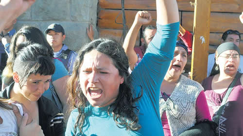

Real Chubut - Agencia de Noticias


Gritos, patadas, golpes y palazos

Manifestantes que repudiaban el fallo de extradición de Jones Huala fueron detenidos y agredidos por agentes de Río Negro que los mantuvieron incomunicados. “Me torturaron a patadas, no podía respirar”, relató un joven de 14 años.
Patadas, golpes y palazos, traslados nocturnos e incomunicación fueron las respuestas policiales en Bariloche. Las personas detenidas durante la represión a la protesta por el fallo de extradición de Facundo Jones Huala denunciaron que fueron torturadas durante las primeras horas que estuvieron presas, mientras la policía de Río Negro impedía todo contacto con familiares y abogados. “Santiago Maldonado, presente, ahora y siempre”, gritaron en la sala del juzgado de garantías de Marcos Burgos, donde poco después escucharían las acusaciones. El magistrado ordenó ayer su liberación, pero seguirán acusadas por la rotura de un tacho de basura y la cámara de seguridad de un banco.
“Me tiraron al piso una mujer y tres varones policías, me hicieron un torniquete y me metieron un palo en la ingle”, dijo a PáginaI12 Lorena Claros, de radio Libre Cooperativa, apenas pisó la vereda. “Me torturaron a patadas, me duelen las muñecas, me dejaron las esposas puestas, me apretaron la cabeza, no podía respirar”, relató un joven mapuche de 14 años. “Les dieron duro”, comentó el perito médico que los revisó.
Cuando el juez federal Gustavo Villanueva anunció anteayer su decisión de conceder la extradición a Chile del lonko del territorio mapuche recuperado en Cushamen, por un incendio ocurrido en 2013, volaron algunos palos y piedras contra el juzgado, custodiado por la Policía provincial y la de Seguridad Aeroportuaria. Luego de ser dispersados, los miembros de las comunidades mapuches, de las redes de apoyo y los cronistas fueron perseguidos. “Me estaba yendo al auto para irnos a Neuquén cuando apareció una camioneta y nos gritaron ‘tirate al piso’, un policía me apuntó en la cabeza con una escopeta, no teníamos nada que ver, por lo que nos acusan es algo que sucedió a más de diez cuadras”, expresó el menor que ya denunció ante la fiscalía los vejámenes que sufrió en la comisaría segunda de Bariloche. “Soy fuerte pero me molieron a patadas, les decía que soy menor pero no les importó, me gritaban ‘indio maricón’”, agregó.
Fernanda Pilquiñán es la madre del adolescente mapuche, cuya identidad será preservada por este medio. “Mi hijo fue insultado, golpeado y maltratado, ví por las redes sociales como lo golpeaban al momento de llevarlo detenido”, dijo la mujer a PáginaI12. “Estoy con él esperando la liberación de mi marido y de mi amigo, Gustavo Peña Ponce, junto a los otros lamienes, y seguiremos pidiendo la libertad del lonko Facundo”, dijo Pilquiñán con la voz quebrada por el llanto.
“Me pegó una patada y se me tiró encima. Me puso el poncho de lana en la cara. Me estaba apretando la cabeza con las piernas, no me dejaba respirar”, dijo el joven sobre el policía que lo detuvo. “Me hizo una llave que me apretaba fuerte el cuello, después me llevaron. Ahí ví a mi padrastro, lo tenían en el piso con los amigos. Y a las mujeres las tenían hombres policías, no mujeres. Me tenían contra el vidrio, todos le pedían que me sacara las esposas, pero se reían de mí”, relató el menor.
Lorena Claros afirmó que en todo momento se identificó como trabajadora de prensa. Le apretaron la vejiga, la tenían sujetada por detrás, se orinó y no le permitieron cambiarse de ropa. El médico le dijo que no descartaba que tenga lesiones internas. A medianoche fue una de las cuatro trasladadas a varios puntos de la ciudad, mientras los fiscales salían por la parte trasera de la comisaría sin informar a familiares y abogados, y con varias motos policiales sin patente merodeando en el acampe donde aguardaban sus compañeros.
Además de su trabajo en la radio, Claros es una referente de los jóvenes en los barrios del Alto Bariloche. “Es mentira que le pegué un codazo a una mujer policía, ella tenía un casco tortuga, yo estaba boca abajo con tres tipos encima que me metieron un palo entre las piernas, y me hicieron un torniquete hasta hacerme mear. Les molestó que le dije ‘estás cometiendo un delito, me estás sacando el grabador, te cagás en que tengo carnet de prensa, tengo derecho a hablar antes de que me arresten’”, completó. Todos fueron imputados por daños, resistencia a la autoridad y lesiones leves.
A medianoche a los varones fueron llevaron a la comisaría 20, del Alto Bariloche sin aviso a nadie. También estuvieron incomunicadas las mujeres, que fueron trasladadas a la delegación de la PSA. Varias son militantes feministas y destacaron que sufrieron una saña particular porque ejercieron más resistencia al momento de ser apresadas. La abogada Natalia Araya cuestionó que la fiscalía “usa verbos de manera genérica como si fuera todo lo mismo, arrojar piedras no es delito, hay que probar a quién se lesionó, no hay delitos concretos que se les pueda imputar a mis defendidos, es una respuesta institucional a una protesta social, tenemos acá sentados a manifestantes no a quienes produjeron los daños”. El juez Burgos dijo que fueron detenidos en “casi flagrancia” y avaló las detenciones, ordenando una investigación de 4 meses. “No hay precisiones sobre quiénes ni a qué hora rompieron un tacho de basura y una cámara del banco Credicoop”, insistió la defensa.
Fuente: Pagina 12